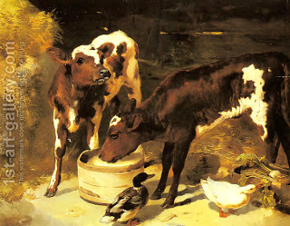

Chulin 82 - Permutations of Animal and its Offspring
If two people bought a cow and its offspring from one person on one day, whoever bought first may slaughter first, and the other one is enjoined from slaughtering on that day . However, if the second buyer preceded the first and slaughtered his animal, he has gained the right to eat its meat, and is not penalized for this.
If one slaughtered a cow and then slaughtered its two calves, he transgressed twice and is liable to two sets of lashes, but if he slaughtered the calves and then the mother, he transgressed only once.
If one slaughtered a cow, its daughter and its daughter's daughter on one day, he transgressed twice, but if he first slaughtered a cow and its daughter's daughter's (for which he is not liable), and then slaughtered the daughter that day, he transgressed only once. However, Sumchos says that he transgressed twice here too: when he slaughtered the middle generation, he was doing two transgressions with one act, and it is Sumchos' opinion, for example, that for eating two portions of non-kosher food was is liable twice.
Art: George W. Horlor - Calves Feeding